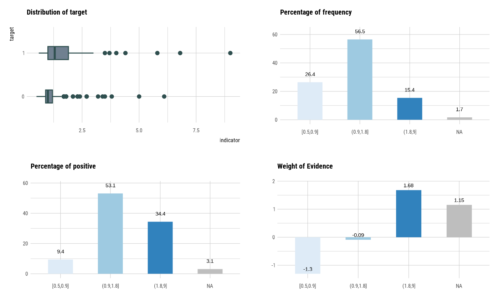

It generates plots for understand distribution, bad rate, and weight of evidence after running smbinning and saving its output.
See vignette("transformation") for an introduction to these concepts.
# S3 method for optimal_bins plot(x, type = c("dist", "goodrate", "badrate", "WoE"), sub = "", ...)
| x | an object of class "optimal_bins", usually, a result of a call to binning_by(). |
|---|---|
| type | character. options for visualization. Distribution ("dist"), Good Rate ("goodrate"), Bad Rate ("badrate"), and Weight of Evidence ("WoE"). |
| sub | character. sub title for the chart (optional). |
| ... | arguments to be passed to methods, such as graphical parameters (see par). only applies to the first graph that is implemented with the boxplot() function. |
binning_by, plot.bins, smbinning.plot.
# Generate data for the example carseats <- ISLR::Carseats carseats[sample(seq(NROW(carseats)), 20), "Income"] <- NA carseats[sample(seq(NROW(carseats)), 5), "Urban"] <- NA # optimal binning bin <- binning_by(carseats, "US", "Advertising")#> Warning: The factor y has been changed to a numeric vector consisting of 0 and 1.bin#> binned type: optimal #> number of bins: 3 #> x #> [-1,0] (0,6] (6,29] #> 144 69 187#> levels freq rate #> 1 [-1,0] 144 0.3600 #> 2 (0,6] 69 0.1725 #> 3 (6,29] 187 0.4675#> [1] 4.8349#> Cutpoint CntRec CntGood CntBad CntCumRec CntCumGood CntCumBad PctRec GoodRate BadRate #> 1 <= 0 144 19 125 144 19 125 0.3600 0.1319 0.8681 #> 2 <= 6 69 54 15 213 73 140 0.1725 0.7826 0.2174 #> 3 > 6 187 185 2 400 258 142 0.4675 0.9893 0.0107 #> 4 Missing 0 0 0 400 258 142 0.0000 NaN NaN #> 5 Total 400 258 142 NA NA NA 1.0000 0.6450 0.3550 #> Odds LnOdds WoE IV #> 1 0.1520 -1.8839 -2.4810 2.0013 #> 2 3.6000 1.2809 0.6838 0.0709 #> 3 92.5000 4.5272 3.9301 2.7627 #> 4 NaN NaN NaN NaN #> 5 1.8169 0.5971 0.0000 4.8349